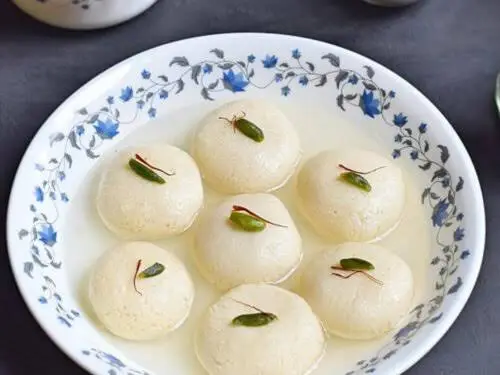
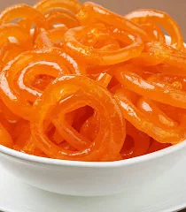

Rasmalayi
Ingredients
- Sugar
- bread
- Oil
Recipe
- Boil Milk: In a wide pan, boil milk. Simmer and reduce to half, stirring often.
- Flavor: Add sugar, cardamom, saffron, and chopped nuts. Simmer 5 more minutes.
- Prep Rasgullas: Squeeze rasgullas gently to remove syrup.
- Soak: Add rasgullas to hot rabri (thickened milk). Simmer 2–3 mins.
- Chill: Cool and refrigerate for a few hours. Garnish with nuts before serving.

Barfi
Ingredients
- Sugar
- bread
- Oil
Recipe
- Heat Ghee: In a nonstick pan, melt ghee on low flame.
- Mix: Add milk and sugar. Stir until sugar dissolves.
- Add Milk Powder: Mix in milk powder gradually, keep stirring.
- Cook: Stir continuously until the mixture thickens and leaves sides of pan (8–10 mins)
- Cool & Cut: Let it cool, then cut into squares or diamonds.

Gulab Jamun
Ingredients
- Sugar
- bread
- Oil
Recipe
- Syrup: Boil sugar, water, cardamom & lemon juice for 5–7 mins. Add rose water. Keep warm.
- Dough: Mix milk powder, flour, baking soda. Add ghee, then milk to form soft dough. Rest 10 mins.
- Fry: On low heat, fry till golden brown.
- Soak: Place hot jamuns in warm syrup. Soak 1–2 hours.

Rasogulla
Ingredients
- Sugar
- bread
- Oil
Recipe
- Boil milk → add lemon juice → curdle → strain & rinse → hang in cloth for 30 mins.
- Knead chenna (paneer) for 8–10 mins until smooth. Make small balls.
- In a wide pan, boil sugar + water + cardamom. Add balls
- Let rasgullas cool in syrup before serving.

Ladoo
Ingredients
- Sugar
- bread
- Oil
Recipe
- Let rasgullas cool in syrup before serving.
- Let mixture cool slightly (warm, not hot).
- Add cardamom powder & powdered sugar. Mix well.
- Form into small laddus. Garnish with nuts if you like.
Jalebi
Ingredients
- Sugar
- bread
- Oil
Recipe
- Boil sugar + water + cardamom. Add lemon juice. Cook till 1-string consistency. Keep warm.
- Mix all batter ingredients to a smooth, thick-flowing consistency. Rest 10 mins.
- Fill batter in piping bag or squeeze bottle. Pipe spirals into medium-hot oil. Fry till crisp.
- Dip fried jalebis in warm syrup for 30–60 seconds. Remove & serve hot!
